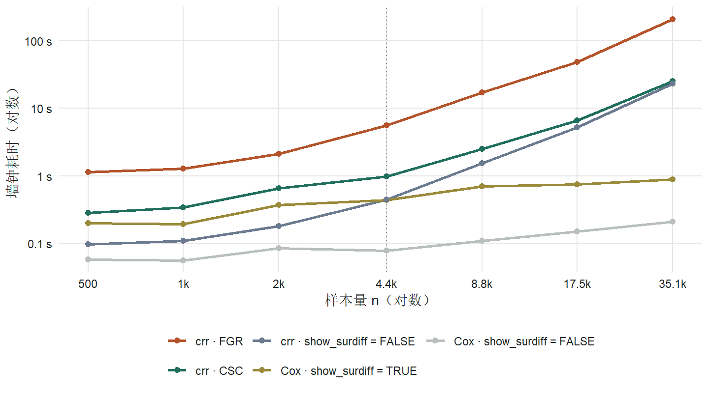
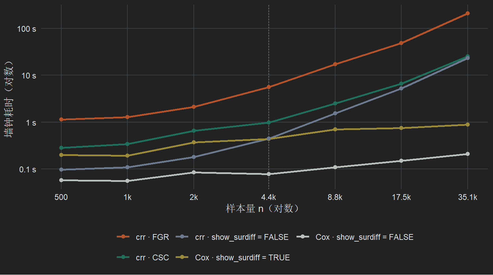
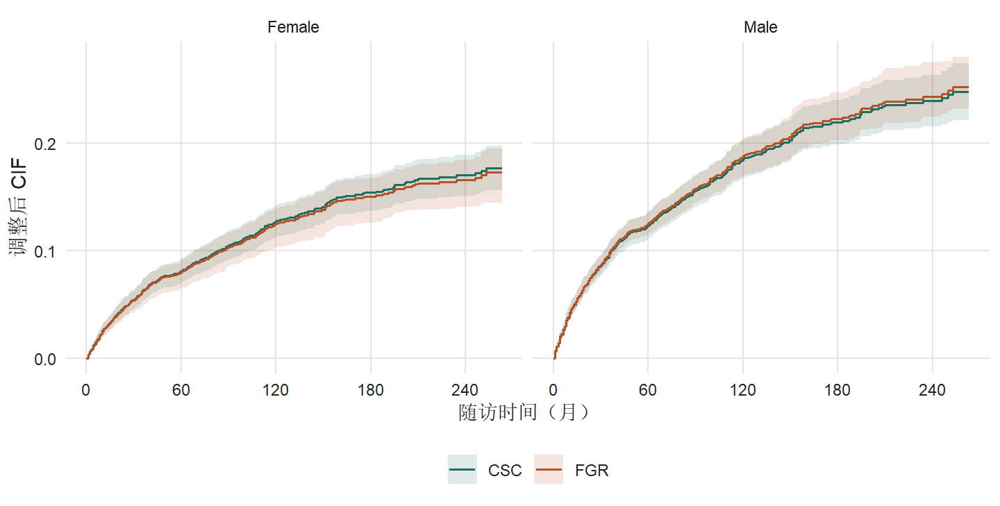
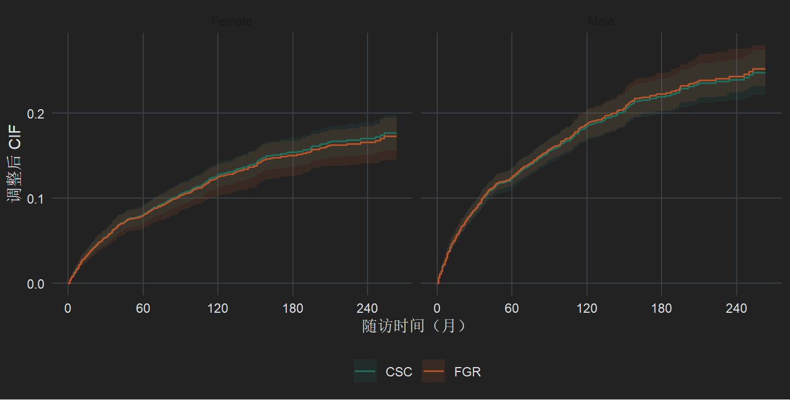
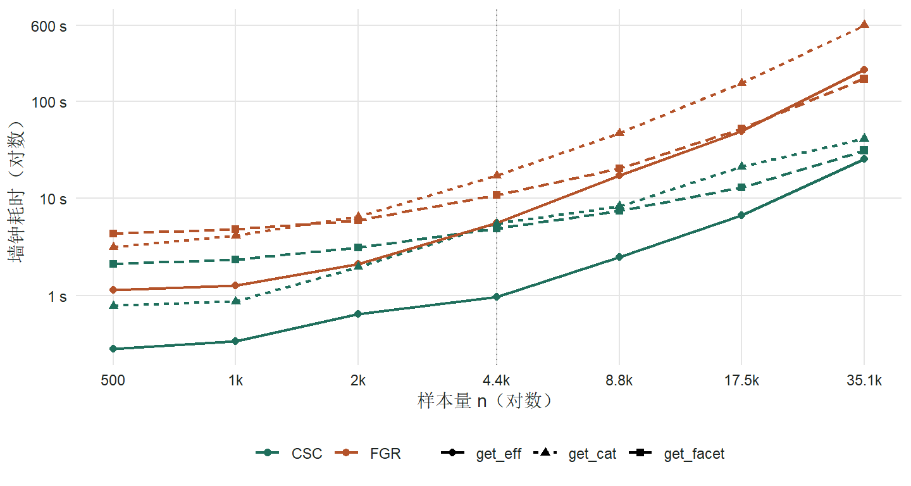
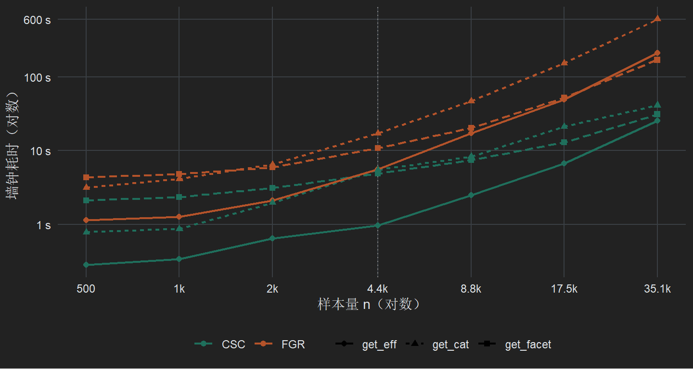

get_eff · get_cat · get_facet 中 cif_args 与 show_surdiff 在不同样本量下的基准评估
评估对象是 RegR 0.1.3（commit 7f2aced）的 get_eff()、get_cat() 和 get_facet()，在竞争风险分析（surv = FALSE）中比较两个设置：
cif_args = list(model = c("FGR", "CSC"))：调整后 CIF（method = "direct"）的工作模型。"FGR"（默认）是 Fine-Gray 模型，只能用 50 次 bootstrap 求 CI；"CSC" 是各原因 Cox 模型，用 riskRegression::ate() 的解析方差。三个函数的 sHR/HR 列都固定来自 tidycmprsk::crr，不受 cif_args 影响。show_surdiff = TRUE / FALSE：是否生成 CIF / ΔCIF 表（get_eff 的 sur_*，get_facet 内嵌表的 SP/SD 列）。get_cat() 固定生成，没有这个开关。show_surdiff = FALSE 省下的时间几乎等于 FGR 的 bootstrap。用 CSC 时关掉 show_surdiff 只省 0.2–2 s。n 很大时，show_surdiff = FALSE 本身也要 23 s，瓶颈是 tidycmprsk::crr 拟合 sHR 表（约按 n1.9 增长），cif_args 管不到这一步。sur_unadj 完全相同。调整后 CIF 点估计相差 ≤ 1.0 个百分点，ΔCIF 相差 ≤ 1.1 个百分点，所有对比的显著性结论相同。CSC 的 CI 宽度落在 FGR 换随机种子后的波动范围内。get_cat() 里差距更大。FGR 要做 3 次 bootstrap（整条曲线、单时点表、多时点表），n ≤ 4387 时是 CSC 的 3–5 倍，n = 35096 时 602 s 对 41 s。两条曲线的最大点差不超过 0.83 个百分点。n = 1000 时，同一份数据、同一个 10 年 ΔCIF 点估计，FGR 的 bootstrap P 在 get_eff 中是 0.056，在 get_cat 的多时点表中是 0.031；CSC 两处都是 0.080。get_facet()（method = "direct"）里差距较小。各分层并行计算，FGR 是 CSC 的 1.9–5.4 倍（n = 35096 时 169 s 对 31 s）。show_surdiff = TRUE 在 FGR 下让耗时增加 60–80%，在 CSC 下只多 0.4–3 s。各层 HR 完全相同，SP/SD 的显著性结论在所有样本量下一致。RegR::seer_thyroid_mtc_2026（n = 4387；event 0/1/2 = 3207/597/583）。n ≤ 4387 用无放回抽样；n = 8774、17548、35096 用有放回重抽样放大（表中标 *），重复行会带来结，只用于看耗时的增长趋势。get_eff(d, cat_var = "Sex", adj_var = c("Age", "Race", "M"), surv = FALSE, time = 120, ...)，methods 用默认的 c("unadj", "direct")。show_surdiff = FALSE（此时 cif_args 不起作用）；② show_surdiff = TRUE + cif_args = list(model = "FGR")（即默认）；③ 同上但用 "CSC"。另测了 Cox（surv = TRUE）下 show_surdiff 开和关作为对照。cat_var 时外层串行。FGR 的 adjustedcif(bootstrap = TRUE, n_boot = 50, n_cores = 5) 在 Linux 上走 fork 后端。

| n | surdiff=FALSE | CSC 总 | FGR 总 | FGR/CSC 总 | CSC CIF 增量 | FGR CIF 增量 | FGR/CSC 增量 |
|---|---|---|---|---|---|---|---|
| 500 | 0.10 | 0.28 | 1.14 | 4.0× | 0.19 | 1.04 | 6× |
| 1000 | 0.11 | 0.34 | 1.27 | 3.7× | 0.23 | 1.17 | 5× |
| 2000 | 0.18 | 0.65 | 2.13 | 3.3× | 0.47 | 1.95 | 4× |
| 4387 | 0.44 | 0.98 | 5.64 | 5.8× | 0.53 | 5.19 | 10× |
| 8774* | 1.53 | 2.51 | 17.2 | 6.9× | 0.97 | 15.7 | 16× |
| 17548* | 5.21 | 6.68 | 49.0 | 7.3× | 1.48 | 43.8 | 30× |
| 35096* | 23.3 | 25.2 | 211.0 | 8.4× | 1.96 | 187.7 | 96× |
n 从 4387 增到 35096（8 倍）时，拟合出的幂律指数：FGR 总耗时约 n1.74，FGR 的 CIF 增量约 n1.73，show_surdiff = FALSE（即 crr 的 sHR 表）约 n1.90，CSC 的 CIF 增量约 n0.63。大样本下，CSC 调用的总耗时基本就是 crr 拟合 sHR 表的耗时。
CPU 时间说明了 FGR 贵在哪里：n = 35096 时，FGR 墙钟 211 s、CPU 929 s（约 4.4 个核满载）；CSC 墙钟 25 s、CPU 63 s。在共享服务器或 Windows PSOCK 环境下，FGR 的实际代价会比这里的墙钟时间更明显。
| n | crr·FGR 增量 | 倍数 | crr·CSC 增量 | 倍数 | Cox 增量 | 倍数 |
|---|---|---|---|---|---|---|
| 500 | +1.04 | 11.8× | +0.19 | 2.9× | +0.14 | 3.4× |
| 1000 | +1.17 | 11.7× | +0.23 | 3.1× | +0.14 | 3.5× |
| 2000 | +1.95 | 11.9× | +0.47 | 3.6× | +0.29 | 4.4× |
| 4387 | +5.19 | 12.7× | +0.53 | 2.2× | +0.36 | 5.6× |
| 8774* | +15.7 | 11.2× | +0.97 | 1.6× | +0.59 | 6.4× |
| 17548* | +43.8 | 9.4× | +1.48 | 1.3× | +0.60 | 5.0× |
| 35096* | +187.7 | 9.1× | +1.96 | 1.1× | +0.67 | 4.2× |
show_surdiff 后总耗时是关闭时的 9–13 倍，这是最值得优化的地方。固定条件：完整数据 n = 4387，cat_var = c("Sex", "Race", "Che", "M")，adj_var = c("Age", "Sur")，分别在 60 个月和 120 个月比较 sur_direct。
haz_unadj、haz_direct 两张表在 FGR 与 CSC 之间 identical() 为 TRUE，sur_unadj（Aalen–Johansen）也完全相同。cif_args 只影响 sur_direct。estimate = 参照组 CIF − 该组 CIF，所以 Male、M1 等风险更高的组显示为负值。set.seed(1) 下的一次结果。
| 月 | 变量 | 水平 | AJ | FGR CIF (95% CI) | CSC CIF (95% CI) | 点差 | CI 宽 FGR / CSC |
|---|---|---|---|---|---|---|---|
| 60 | Sex | Female（参照） | 0.0671 | 0.0732 (0.0631, 0.0849) | 0.0732 (0.0628, 0.0836) | 0.0000 | 0.022 / 0.021 |
| 60 | Sex | Male | 0.1420 | 0.1356 (0.1269, 0.1534) | 0.1357 (0.1219, 0.1496) | +0.0001 | 0.027 / 0.028 |
| 60 | Race | White（参照） | 0.0993 | 0.1037 (0.0941, 0.1115) | 0.1042 (0.0941, 0.1142) | +0.0005 | 0.018 / 0.020 |
| 60 | Race | Black | 0.1129 | 0.1082 (0.0835, 0.1312) | 0.1114 (0.0841, 0.1387) | +0.0032 | 0.048 / 0.055 |
| 60 | Race | Other/Unknown | 0.0721 | 0.0750 (0.0524, 0.0963) | 0.0723 (0.0480, 0.0966) | −0.0027 | 0.044 / 0.049 |
| 60 | Che | No/Unknown（参照） | 0.0746 | 0.0828 (0.0753, 0.0916) | 0.0819 (0.0721, 0.0918) | −0.0009 | 0.016 / 0.020 |
| 60 | Che | Yes | 0.4981 | 0.2919 (0.2409, 0.3410) | 0.2888 (0.2324, 0.3452) | −0.0030 | 0.100 / 0.113 |
| 60 | M | M0（参照） | 0.0496 | 0.0598 (0.0516, 0.0673) | 0.0576 (0.0498, 0.0653) | −0.0022 | 0.016 / 0.016 |
| 60 | M | M1 | 0.5539 | 0.4345 (0.3916, 0.4773) | 0.4433 (0.3885, 0.4981) | +0.0088 | 0.086 / 0.110 |
| 60 | M | Unknown | 0.1640 | 0.1190 (0.0742, 0.1766) | 0.1087 (0.0627, 0.1546) | −0.0103 | 0.102 / 0.092 |
| 120 | Sex | Female（参照） | 0.1029 | 0.1142 (0.1039, 0.1328) | 0.1153 (0.1009, 0.1298) | +0.0011 | 0.029 / 0.029 |
| 120 | Sex | Male | 0.2154 | 0.2047 (0.1868, 0.2247) | 0.2044 (0.1854, 0.2235) | −0.0003 | 0.038 / 0.038 |
| 120 | Race | White（参照） | 0.1536 | 0.1577 (0.1434, 0.1709) | 0.1583 (0.1450, 0.1717) | +0.0006 | 0.028 / 0.027 |
| 120 | Race | Black | 0.1515 | 0.1641 (0.1304, 0.2034) | 0.1681 (0.1297, 0.2065) | +0.0040 | 0.073 / 0.077 |
| 120 | Race | Other/Unknown | 0.1023 | 0.1160 (0.0935, 0.1473) | 0.1125 (0.0767, 0.1482) | −0.0035 | 0.054 / 0.072 |
| 120 | Che | No/Unknown（参照） | 0.1211 | 0.1322 (0.1228, 0.1465) | 0.1332 (0.1201, 0.1463) | +0.0010 | 0.024 / 0.026 |
| 120 | Che | Yes | 0.6444 | 0.4252 (0.3740, 0.5018) | 0.4197 (0.3417, 0.4977) | −0.0055 | 0.128 / 0.156 |
| 120 | M | M0（参照） | 0.0974 | 0.0997 (0.0926, 0.1083) | 0.0999 (0.0875, 0.1124) | +0.0003 | 0.016 / 0.025 |
| 120 | M | M1 | 0.6383 | 0.6137 (0.5409, 0.6616) | 0.6236 (0.5615, 0.6856) | +0.0099 | 0.121 / 0.124 |
| 120 | M | Unknown | 0.2519 | 0.1936 (0.1216, 0.2639) | 0.1852 (0.1116, 0.2589) | −0.0084 | 0.142 / 0.147 |
| 月 | 对比（相对参照组） | FGR ΔCIF (95% CI) | FGR P | CSC ΔCIF (95% CI) | CSC P |
|---|---|---|---|---|---|
| 60 | Sex: Male | −0.0624 (−0.0812, −0.0436) | 7.6e-11 | −0.0625 (−0.0798, −0.0452) | 1.5e-12 |
| 60 | Race: Black | −0.0045 (−0.0343, 0.0253) | 0.77 | −0.0072 (−0.0364, 0.0219) | 0.63 |
| 60 | Race: Other/Unknown | 0.0287 (0.0027, 0.0546) | 0.030 | 0.0318 (0.0055, 0.0581) | 0.018 |
| 60 | Che: Yes | −0.2091 (−0.2648, −0.1534) | 1.9e-13 | −0.2069 (−0.2642, −0.1497) | 1.4e-12 |
| 60 | M: M1 | −0.3747 (−0.4250, −0.3244) | 3.3e-48 | −0.3857 (−0.4411, −0.3304) | 1.6e-42 |
| 60 | M: Unknown | −0.0592 (−0.1174, −0.0011) | 0.046 | −0.0511 (−0.0977, −0.0045) | 0.032 |
| 120 | Sex: Male | −0.0905 (−0.1166, −0.0644) | 1.1e-11 | −0.0891 (−0.1130, −0.0652) | 2.8e-13 |
| 120 | Race: Black | −0.0064 (−0.0475, 0.0347) | 0.76 | −0.0097 (−0.0504, 0.0309) | 0.64 |
| 120 | Race: Other/Unknown | 0.0417 (0.0053, 0.0781) | 0.025 | 0.0459 (0.0078, 0.0840) | 0.018 |
| 120 | Che: Yes | −0.2930 (−0.3728, −0.2131) | 6.4e-13 | −0.2865 (−0.3656, −0.2074) | 1.2e-12 |
| 120 | M: M1 | −0.5140 (−0.5774, −0.4506) | 8.1e-57 | −0.5236 (−0.5869, −0.4604) | 3.6e-59 |
| 120 | M: Unknown | −0.0939 (−0.1768, −0.0111) | 0.026 | −0.0853 (−0.1600, −0.0106) | 0.025 |
在 120 个月、同一数据上用 5 个种子（101–105）重跑 FGR：点估计完全不变（点估计不依赖 bootstrap），但 CI 和 P 值都会变。
| 变量 | 水平 | FGR CIF 的 CI 宽度 | CSC CI 宽度 | FGR ΔCIF CI 下限 | FGR ΔCIF CI 上限 | FGR P | CSC P |
|---|---|---|---|---|---|---|---|
| Sex | Male | 0.032 … 0.043 | 0.038 | −0.118 … −0.112 | −0.069 … −0.063 | 4e-16 … 8e-11 | 2.8e-13 |
| Race | Black | 0.065 … 0.078 | 0.077 | −0.051 … −0.044 | 0.032 … 0.038 | 0.740 … 0.778 | 0.638 |
| Race | Other/Unknown | 0.057 … 0.079 | 0.072 | −0.000 … 0.007 | 0.077 … 0.084 | 0.019 … 0.050 | 0.018 |
| Che | Yes | 0.131 … 0.158 | 0.156 | −0.378 … −0.361 | −0.225 … −0.208 | 3e-17 … 1.5e-11 | 1.2e-12 |
| M | M0（参照） | 0.017 … 0.027 | 0.025 | — | — | — | — |
| M | M1 | 0.102 … 0.127 | 0.124 | −0.586 … −0.568 | −0.460 … −0.442 | 2e-77 … 4e-44 | 3.6e-59 |
| M | Unknown | 0.130 … 0.174 | 0.147 | −0.186 … −0.166 | −0.022 … −0.002 | 0.011 … 0.046 | 0.025 |
| n | Female FGR / CSC | Male FGR / CSC | FGR ΔCIF (95% CI) · P | CSC ΔCIF (95% CI) · P |
|---|---|---|---|---|
| 500 | 0.1228 / 0.1247 | 0.1852 / 0.1861 | −0.0624 (−0.1277, 0.0028) · 0.061 | −0.0614 (−0.1295, 0.0067) · 0.077 |
| 1000 | 0.1515 / 0.1534 | 0.2011 / 0.1999 | −0.0495 (−0.1003, 0.0012) · 0.056 | −0.0465 (−0.0985, 0.0055) · 0.080 |
| 2000 | 0.1265 / 0.1286 | 0.1869 / 0.1846 | −0.0604 (−0.0938, −0.0270) · 3.9e-4 | −0.0560 (−0.0895, −0.0225) · 1.1e-3 |
| 4387 | 0.1256 / 0.1281 | 0.1887 / 0.1859 | −0.0632 (−0.0901, −0.0362) · 4.4e-6 | −0.0579 (−0.0810, −0.0347) · 1.0e-6 |
| 8774* | 0.1327 / 0.1355 | 0.2055 / 0.2015 | −0.0729 (−0.0907, −0.0550) · 1.2e-15 | −0.0660 (−0.0833, −0.0487) · 6.9e-14 |
| 17548* | 0.1291 / 0.1322 | 0.1860 / 0.1824 | −0.0569 (−0.0678, −0.0461) · 7.5e-25 | −0.0502 (−0.0619, −0.0385) · 4.8e-17 |
| 35096* | 0.1292 / 0.1317 | 0.1976 / 0.1950 | −0.0683 (−0.0765, −0.0602) · 1.8e-60 | −0.0633 (−0.0717, −0.0549) · 1.2e-49 |
两个后端的 ΔCIF 始终同号、显著性判断相同。FGR 的 |ΔCIF| 系统性地大 0.3–0.7 个百分点，原因是两者的工作模型不同（比例子分布风险 vs 各原因比例风险），不是随机误差。n = 500 和 1000 时两个后端都不显著（P ≈ 0.06–0.08）。
get_cat() 的结果分三块，cif_args 只作用于其中 method = "direct" 的 CIF：
| 组成部分 | 内容 | CSC 是否生效 |
|---|---|---|
cat$obj |
整个随访期的调整后 CIF 曲线（times = NULL，本数据有 95–227 个时间点） |
生效 |
cat$UM |
内部调用一次 get_eff(show_surdiff = TRUE)：sHR 表和 timepoint 时刻的 CIF/ΔCIF 表 |
sHR 不受影响；sur_direct 生效 |
cat$Mul |
二分类暴露在 60/120/180 个月的 ΔCIF | 生效 |
所以一次 get_cat() 调用里，FGR 要跑 3 次 50 次重抽样的 bootstrap（曲线、单时点表、多时点表各一次），CSC 一次也不跑。计时调用为 get_cat(d, cat_var = "Sex", adj_var = c("Age", "Race", "M"), surv = FALSE, cif_args = list(model = m))，其余参数用默认值；数据与 get_eff 基准是同一批抽样，n ≤ 4387 重复 3 次，更大的 n 重复 2 次。
| n | CSC | FGR | FGR/CSC | CSC 额外 | FGR 额外 |
|---|---|---|---|---|---|
| 500 | 0.79 | 3.16 | 4.0× | 0.50 | 2.02 |
| 1000 | 0.87 | 4.14 | 4.7× | 0.53 | 2.87 |
| 2000 | 1.98 | 6.51 | 3.3× | 1.32 | 4.38 |
| 4387 | 5.51 | 17.1 | 3.1× | 4.54 | 11.5 |
| 8774* | 8.32 | 46.8 | 5.6× | 5.81 | 29.5 |
| 17548* | 21.1 | 152.5 | 7.2× | 14.4 | 103.4 |
| 35096* | 41.2 | 602.2 | 14.6× | 15.9 | 391.2 |
get_cat 里比在 get_eff 里慢（n = 4387 时 5.5 s 对 1.0 s）：整条曲线要在所有时间点上算 riskRegression::ate() 的影响函数，这一块占了 CSC 调用的大部分时间，但仍远低于 FGR 的 3 次 bootstrap。

| n | 时间点数 | 最大点差 | 出现位置 | CI 宽度比 CSC/FGR |
|---|---|---|---|---|
| 500 | 95 | 0.0083 | Male，234 月 | 1.10 |
| 1000 | 142 | 0.0022 | Female，194 月 | 1.08 |
| 2000 | 193 | 0.0033 | Male，164 月 | 1.12 |
| 4387 | 226 | 0.0045 | Male，253 月 | 0.95 |
| 8774* | 218 | 0.0051 | Female，253 月 | 1.06 |
| 17548* | 224 | 0.0047 | Male，250 月 | 1.18 |
| 35096* | 226 | 0.0038 | Female，234 月 | 1.10 |
两条曲线在整个随访期内几乎重合：最大点差在 n = 500 时为 0.83 个百分点，其余样本量都不超过 0.51 个百分点，且都出现在随访末段（160 个月以后）风险集很小的地方。除 n = 4387 时 CSC 的 CI 平均窄 5% 外，其余样本量 CSC 的 CI 平均比 FGR 宽 6–18%。
| n | 时间 | FGR ΔCIF | FGR P | CSC ΔCIF | CSC P |
|---|---|---|---|---|---|
| 500 | 5 年 | -0.0471 (-0.1005, 0.0064) | 0.084 | -0.0502 (-0.1045, 0.0041) | 0.070 |
| 500 | 10 年 | -0.0624 (-0.1324, 0.0075) | 0.080 | -0.0614 (-0.1295, 0.0067) | 0.077 |
| 500 | 15 年 | -0.0728 (-0.1587, 0.0131) | 0.097 | -0.0667 (-0.1463, 0.0129) | 0.101 |
| 1000 | ** 5 年** | -0.0344 (-0.0680, -0.0008) | 0.045 | -0.0320 (-0.0691, 0.0051) | 0.091 |
| 1000 | 10 年 | -0.0495 (-0.0947, -0.0044) | 0.031 | -0.0465 (-0.0985, 0.0055) | 0.080 |
| 1000 | 15 年 | -0.0575 (-0.1117, -0.0034) | 0.037 | -0.0550 (-0.1166, 0.0066) | 0.080 |
| 2000 | 5 年 | -0.0442 (-0.0704, -0.0180) | 9.5e-04 | -0.0417 (-0.0668, -0.0166) | 0.001 |
| 2000 | 10 年 | -0.0604 (-0.0942, -0.0266) | 4.6e-04 | -0.0560 (-0.0895, -0.0225) | 0.001 |
| 2000 | 15 年 | -0.0707 (-0.1105, -0.0308) | 5.1e-04 | -0.0652 (-0.1052, -0.0253) | 0.001 |
| 4387 | 5 年 | -0.0452 (-0.0629, -0.0275) | 5.4e-07 | -0.0425 (-0.0594, -0.0256) | 8.0e-07 |
| 4387 | 10 年 | -0.0632 (-0.0858, -0.0406) | 4.3e-08 | -0.0579 (-0.0810, -0.0347) | 1.0e-06 |
| 4387 | 15 年 | -0.0721 (-0.0974, -0.0469) | 2.1e-08 | -0.0653 (-0.0922, -0.0384) | 1.9e-06 |
| 8774* | 5 年 | -0.0516 (-0.0645, -0.0387) | 3.8e-15 | -0.0475 (-0.0597, -0.0352) | 2.8e-14 |
| 8774* | 10 年 | -0.0729 (-0.0921, -0.0537) | 1.0e-13 | -0.0660 (-0.0833, -0.0487) | 6.9e-14 |
| 8774* | 15 年 | -0.0837 (-0.1045, -0.0629) | 2.9e-15 | -0.0756 (-0.0956, -0.0556) | 1.2e-13 |
| 17548* | 5 年 | -0.0409 (-0.0498, -0.0320) | 1.4e-19 | -0.0370 (-0.0456, -0.0285) | 2.2e-17 |
| 17548* | 10 年 | -0.0569 (-0.0694, -0.0445) | 3.0e-19 | -0.0502 (-0.0619, -0.0385) | 4.8e-17 |
| 17548* | 15 年 | -0.0639 (-0.0784, -0.0494) | 5.1e-18 | -0.0559 (-0.0691, -0.0426) | 1.7e-16 |
| 35096* | 5 年 | -0.0496 (-0.0559, -0.0432) | 1.4e-52 | -0.0468 (-0.0529, -0.0407) | 6.2e-51 |
| 35096* | 10 年 | -0.0683 (-0.0766, -0.0600) | 2.4e-58 | -0.0633 (-0.0717, -0.0549) | 1.2e-49 |
| 35096* | 15 年 | -0.0770 (-0.0861, -0.0679) | 9.2e-62 | -0.0708 (-0.0804, -0.0612) | 3.2e-47 |
n = 1000 时出现了结论不一致：FGR 在 5、10、15 年都显著（P = 0.031–0.045），CSC 都不显著（P ≈ 0.08–0.09）。这主要不是模型差异造成的：同一份 n = 1000 数据上，get_eff 基准（表 4.6）的 FGR 10 年 ΔCIF 同样是 −0.0495，但 bootstrap 给出的 CI 是 (−0.1003, 0.0012)、P = 0.056；这里 cat$Mul 的 bootstrap 给出 (−0.0947, −0.0044)、P = 0.031。点估计相同，只是两次 bootstrap 抽到的样本不同。CSC 在两处给出完全相同的 −0.0465 (−0.0985, 0.0055)、P = 0.080。也就是说，用 FGR 时，同一次 get_cat() 返回的 cat$UM$sur_direct 和 cat$Mul$direct 对同一个对比可能给出不同的 CI 和 P。
get_facet() 在 split_var 的每一层画 CIF 曲线并嵌入一张小表。cif_args 只在 method 含 "direct" 时起作用，影响曲线（sur.data）和表中的 SP（timepoint 时刻各组 CIF）、SD（组间差）列；表中的 HR 列来自 tidycmprsk::crr，不受影响。show_surdiff = FALSE 跳过 SP/SD，曲线不变（实测 sur.data 在开、关两种设置下完全相同）。
计时调用为 get_facet(d, split_var = "age_55", cat_var = "Sex", adj_var = c("Age", "Race", "M"), surv = FALSE, method = "direct", cif_args = list(model = m), show_surdiff = s, timepoint = 120)，共 2 个分层；subgroup_model 用默认的 "interaction"，parallel = NULL 在 WSL 上解析为 4 个外层 worker。数据与前两节是同一批抽样，n ≤ 4387 重复 3 次，更大的 n 重复 2 次。
| n | CSC 关 | CSC 开 | FGR 关 | FGR 开 | FGR/CSC（开） | CSC 增量 | FGR 增量 |
|---|---|---|---|---|---|---|---|
| 500 | 1.52 | 2.10 | 2.70 | 4.37 | 2.1× | +0.59 | +1.66 |
| 1000 | 1.65 | 2.35 | 2.75 | 4.80 | 2.0× | +0.70 | +2.05 |
| 2000 | 2.22 | 3.14 | 3.67 | 5.94 | 1.9× | +0.92 | +2.27 |
| 4387 | 3.70 | 4.91 | 6.13 | 10.8 | 2.2× | +1.21 | +4.63 |
| 8774* | 5.74 | 7.42 | 12.5 | 20.3 | 2.7× | +1.68 | +7.87 |
| 17548* | 12.5 | 12.9 | 31.1 | 51.8 | 4.0× | +0.44 | +20.8 |
| 35096* | 28.2 | 31.1 | 100.1 | 169.2 | 5.4× | +2.95 | +69.0 |
get_eff、get_cat 里的差距小：两个分层的 bootstrap 同时在不同 worker 上跑，墙钟时间被并行摊薄了。CPU 时间的差距仍然很大，n = 35096 时 FGR 1122 s，CSC 166 s。show_surdiff 的代价取决于后端。FGR 下打开后总耗时是关闭时的 1.6–1.8 倍，因为 SP/SD 要再做一次 bootstrap；CSC 下只多 0.4–3 s。只想看曲线和 HR 时，FGR 用户关掉 show_surdiff 收益明显。show_surdiff 时，大样本的耗时主要在 HR。n = 35096 时 CSC 关闭也要 28 s，大部分花在全数据上的 crr 交互模型（subgroup_model = "interaction"），与 cif_args 无关。| n | 分层 | FGR SD | FGR P | CSC SD | CSC P | HR（两者相同） |
|---|---|---|---|---|---|---|
| 500 | below_54 | -0.059 (-0.145, 0.027) | 0.177 | -0.060 (-0.152, 0.031) | 0.197 | 1.91 (0.97, 3.78) |
| 500 | above_54 | -0.053 (-0.157, 0.050) | 0.313 | -0.051 (-0.151, 0.049) | 0.316 | 1.44 (0.69, 3.03) |
| 1000 | below_54 | -0.024 (-0.092, 0.045) | 0.499 | -0.021 (-0.094, 0.052) | 0.568 | 1.54 (0.92, 2.56) |
| 1000 | above_54 | -0.042 (-0.117, 0.032) | 0.267 | -0.039 (-0.111, 0.033) | 0.289 | 1.35 (0.83, 2.20) |
| 2000 | below_54 | -0.061 (-0.096, -0.025)*** | 0.001*** | -0.058 (-0.102, -0.014)** | 0.010** | 1.90 (1.30, 2.76)*** |
| 2000 | above_54 | -0.056 (-0.102, -0.011)* | 0.014* | -0.053 (-0.101, -0.004)* | 0.033* | 1.55 (1.10, 2.18)* |
| 4387 | below_54 | -0.061 (-0.090, -0.032)*** | <0.001*** | -0.058 (-0.089, -0.027)*** | <0.001*** | 1.93 (1.46, 2.53)*** |
| 4387 | above_54 | -0.064 (-0.102, -0.027)*** | 0.001*** | -0.058 (-0.092, -0.025)*** | 0.001*** | 1.61 (1.28, 2.03)*** |
| 8774* | below_54 | -0.061 (-0.083, -0.038)*** | <0.001*** | -0.058 (-0.081, -0.036)*** | <0.001*** | 1.82 (1.52, 2.18)*** |
| 8774* | above_54 | -0.080 (-0.107, -0.054)*** | <0.001*** | -0.071 (-0.096, -0.046)*** | <0.001*** | 1.81 (1.54, 2.13)*** |
| 17548* | below_54 | -0.050 (-0.066, -0.034)*** | <0.001*** | -0.048 (-0.064, -0.032)*** | <0.001*** | 1.68 (1.47, 1.92)*** |
| 17548* | above_54 | -0.061 (-0.079, -0.042)*** | <0.001*** | -0.052 (-0.069, -0.036)*** | <0.001*** | 1.60 (1.43, 1.80)*** |
| 35096* | below_54 | -0.067 (-0.078, -0.056)*** | <0.001*** | -0.064 (-0.075, -0.053)*** | <0.001*** | 1.98 (1.80, 2.18)*** |
| 35096* | above_54 | -0.070 (-0.082, -0.057)*** | <0.001*** | -0.064 (-0.076, -0.052)*** | <0.001*** | 1.68 (1.55, 1.81)*** |
| n | 最大点差 | 出现位置（分层 / 组，月） | CI 宽度比 CSC/FGR |
|---|---|---|---|
| 500 | 0.0103 | below_54 / Female, 234 | 1.02 |
| 1000 | 0.0043 | below_54 / Female, 246 | 1.12 |
| 2000 | 0.0033 | above_54 / Male, 223 | 1.03 |
| 4387 | 0.0065 | above_54 / Male, 253 | 1.11 |
| 8774* | 0.0071 | above_54 / Female, 253 | 1.20 |
| 17548* | 0.0057 | above_54 / Female, 210 | 1.14 |
| 35096* | 0.0046 | above_54 / Male, 253 | 1.07 |
get_eff 中观察到的系统性差异方向一致。

cat_var，或有 sub_var / split_var（每个亚组都要重做一次 bootstrap）时，用 cif_args = list(model = "CSC")。点估计差异在 1 个百分点以内，结果可复现，不受随机种子影响。set.seed()，并留意 P 接近 0.05 的对比（n_boot = 50 的 bootstrap P 值精度有限）。show_surdiff = FALSE，这是最快的配置；但 n 很大时 crr 本身仍是瓶颈（n = 35096 约 23 s）。get_cat() 最该换 CSC。它没有 show_surdiff 开关，FGR 下一次调用要做 3 次 bootstrap，n = 35096 时要 10 分钟；而且 cat$UM$sur_direct 与 cat$Mul$direct 各自抽样，同一对比可能给出不同的 P。get_facet() 用 FGR 时，只看曲线和 HR 就关掉 show_surdiff，可以省下约 40% 的时间；用 CSC 时开关基本不影响耗时。get_eff 在 n = 4387 时约 10 倍，n 越大倍数越高），但在 get_facet 这类并行分层的函数里墙钟差距只有 2–5 倍，可以补充说明这个倍数随 n 和函数而变。get_facet(surv = FALSE) 在没有 fork 后端时还会退回 parallel = 1，分层改为串行。所以 Windows 上 FGR 的额外开销预计更大，本次没有测量。get_facet 只有 2 个分层的场景。多个 cat_var 或更多分层时外层会并行（上限 4 个 worker × 内层 5 核），耗时不能简单按变量数或分层数线性相乘。get_facet 的耗时包含拼图（ggplot 组图），这一部分与后端无关。所有脚本都在 WSL 的 Rscript 下运行，输出写到当前工作目录。本页的图表直接读取 regr/bench/ 下的 CSV：bench_timing.csv（get_eff 计时）、getcat_*.csv（get_cat 计时、曲线、多时点 ΔCIF）、getfacet_*.csv（get_facet 计时和一致性汇总）。这些文件只含汇总结果，不含个体数据。
suppressMessages(library(RegR))
pdf(NULL)
out_csv <- "bench_timing.csv"; if (file.exists(out_csv)) file.remove(out_csv)
d0 <- as.data.frame(RegR::seer_thyroid_mtc_2026)
d0$DSS <- as.numeric(d0$DSS)
ns <- c(500, 1000, 2000, 4387, 8774, 17548, 35096)
cfgs <- list(
crr_surdiff_FALSE = list(surv = FALSE, show_surdiff = FALSE),
crr_FGR = list(surv = FALSE, show_surdiff = TRUE, cif_args = list(model = "FGR")),
crr_CSC = list(surv = FALSE, show_surdiff = TRUE, cif_args = list(model = "CSC")),
cox_surdiff_FALSE = list(surv = TRUE, show_surdiff = FALSE),
cox_surdiff_TRUE = list(surv = TRUE, show_surdiff = TRUE)
)
quiet <- function(expr) suppressWarnings(suppressMessages(capture.output(r <- expr)))
call_eff <- function(d, cfg) {
res <- NULL
st <- system.time(quiet(res <- do.call(get_eff, c(list(d, cat_var = "Sex",
adj_var = c("Age", "Race", "M"), time = 120), cfg))))
list(res = res, st = st)
}
make_data <- function(n) {
set.seed(20260929 + n)
if (n <= nrow(d0)) d0[sample(nrow(d0), n), ] else d0[sample(nrow(d0), n, replace = TRUE), ]
}
invisible(call_eff(make_data(500), cfgs$crr_CSC)); invisible(call_eff(make_data(500), cfgs$cox_surdiff_TRUE)) # warm-up
keep <- list(); slow <- character()
for (n in ns) {
d <- make_data(n)
reps <- if (n <= 4387) 5 else 3
for (r in seq_len(reps)) for (nm in sample(names(cfgs))) {
if (nm %in% slow) next
set.seed(r)
x <- call_eff(d, cfgs[[nm]])
row <- data.frame(n = n, cfg = nm, rep = r, elapsed = x$st[["elapsed"]],
cpu = sum(x$st[c("user.self","sys.self","user.child","sys.child")], na.rm = TRUE))
write.table(row, out_csv, sep = ",", append = file.exists(out_csv), col.names = !file.exists(out_csv), row.names = FALSE)
cat(sprintf("n=%d %-18s rep%d %.2fs\n", n, nm, r, row$elapsed))
if (r == 1 && nm %in% c("crr_FGR","crr_CSC")) keep[[paste(n, nm)]] <- x$res
}
for (nm in names(cfgs)) { # stop growing a config once it exceeds 10 min
tt <- read.csv(out_csv); if (any(tt$cfg == nm & tt$n == n & tt$elapsed > 600)) slow <- c(slow, nm)
}
}
saveRDS(keep, "bench_results.rds")suppressMessages(library(RegR))
pdf(NULL)
d <- as.data.frame(RegR::seer_thyroid_mtc_2026)
quiet <- function(expr) invisible(suppressWarnings(suppressMessages(capture.output(expr))))
fit <- function(m, tm, ...) { res <- NULL
quiet(res <- get_eff(d, cat_var = c("Sex","Race","Che","M"), adj_var = c("Age","Sur"),
surv = FALSE, time = tm, cif_args = list(model = m), ...)); res }
agree <- list()
for (tm in c(60, 120)) for (m in c("FGR", "CSC")) { set.seed(1); agree[[paste(tm, m)]] <- fit(m, tm) }
for (s in 1:5) { set.seed(100 + s); agree[[paste0("seed", s)]] <- fit("FGR", 120, methods = "direct")$sur_direct }
saveRDS(agree, "agree_results.rds"); cat("DONE\n")# get_cat(surv = FALSE): cif_args FGR vs CSC across sample sizes (WSL Rscript).
# Writes getcat_timing.csv, getcat_curves.csv, getcat_mul.csv.
suppressMessages(library(RegR))
pdf(NULL)
d0 <- as.data.frame(RegR::seer_thyroid_mtc_2026)
ns <- c(500, 1000, 2000, 4387, 8774, 17548, 35096)
cat_var <- "Sex"; adj_var <- c("Age", "Race", "M")
quiet <- function(expr) invisible(suppressWarnings(suppressMessages(capture.output(expr))))
make_data <- function(n) { # same subsamples as bench.R
set.seed(20260929 + n)
if (n <= nrow(d0)) d0[sample(nrow(d0), n), ] else d0[sample(nrow(d0), n, replace = TRUE), ]
}
append_csv <- function(x, f) write.table(x, f, sep = ",", row.names = FALSE,
append = file.exists(f), col.names = !file.exists(f))
for (f in c("getcat_timing.csv", "getcat_curves.csv", "getcat_mul.csv"))
if (file.exists(f)) file.remove(f)
# direct CIF curve: point = full-data fit (adj$cif); CI = bootstrap (FGR) or analytic (CSC)
curve_df <- function(o) {
ci <- if (!is.null(o$boot_adj)) o$boot_adj else o$adj
m <- merge(o$adj[, c("time", "group", "cif")], ci[, c("time", "group", "ci_lower", "ci_upper")],
by = c("time", "group"))
m[order(m$group, m$time), ]
}
quiet(get_cat(make_data(500), cat_var, adj_var, surv = FALSE, cif_args = list(model = "CSC"))) # warm-up
slow <- character()
for (n in ns) {
d <- make_data(n)
reps <- if (n <= 4387) 3 else 2
for (r in seq_len(reps)) for (m in sample(c("FGR", "CSC"))) {
if (m %in% slow) next
set.seed(r); res <- NULL
st <- system.time(quiet(res <- get_cat(d, cat_var, adj_var, surv = FALSE,
cif_args = list(model = m))))
append_csv(data.frame(n = n, model = m, rep = r, elapsed = st[["elapsed"]],
cpu = sum(st[c("user.self", "sys.self", "user.child", "sys.child")], na.rm = TRUE)),
"getcat_timing.csv")
cat(sprintf("n=%d %s rep%d %.1fs\n", n, m, r, st[["elapsed"]]))
if (r == 1) {
cv <- curve_df(res$cat$obj$direct); cv$n <- n; cv$model <- m
append_csv(cv, "getcat_curves.csv")
mu <- as.data.frame(res$cat$Mul$direct)
mu <- mu[!is.na(mu$estimate), c("time", "estimate", "conf.low", "conf.high", "p_value")]
mu$n <- n; mu$model <- m
append_csv(mu, "getcat_mul.csv")
}
}
tt <- read.csv("getcat_timing.csv")
slow <- unique(c(slow, tt$model[tt$n == n & tt$elapsed > 900]))
}
cat("DONE\n")# get_facet(surv = FALSE, method = "direct"): cif_args FGR vs CSC x show_surdiff,
# across sample sizes (WSL Rscript). Writes getfacet_timing.csv and getfacet_results.rds.
suppressMessages(library(RegR))
pdf(NULL)
d0 <- as.data.frame(RegR::seer_thyroid_mtc_2026)
ns <- c(500, 1000, 2000, 4387, 8774, 17548, 35096)
quiet <- function(expr) invisible(suppressWarnings(suppressMessages(capture.output(expr))))
make_data <- function(n) { # same subsamples as bench.R
set.seed(20260929 + n)
if (n <= nrow(d0)) d0[sample(nrow(d0), n), ] else d0[sample(nrow(d0), n, replace = TRUE), ]
}
cfgs <- expand.grid(model = c("FGR", "CSC"), show_surdiff = c(TRUE, FALSE), stringsAsFactors = FALSE)
cfgs$key <- paste(cfgs$model, ifelse(cfgs$show_surdiff, "surdiff_TRUE", "surdiff_FALSE"), sep = "_")
run <- function(d, k) {
cf <- cfgs[cfgs$key == k, ]; res <- NULL; err <- NA_character_
st <- system.time(quiet(tryCatch(
res <- get_facet(d, split_var = "age_55", cat_var = "Sex", adj_var = c("Age", "Race", "M"),
surv = FALSE, method = "direct", cif_args = list(model = cf$model),
show_surdiff = cf$show_surdiff, timepoint = 120),
error = function(e) err <<- conditionMessage(e))))
list(res = res, st = st, err = err)
}
out <- "getfacet_timing.csv"; if (file.exists(out)) file.remove(out)
invisible(run(make_data(500), "CSC_surdiff_TRUE")) # warm-up
keep <- list(); slow <- character()
for (n in ns) {
d <- make_data(n)
reps <- if (n <= 4387) 3 else 2
for (r in seq_len(reps)) for (k in sample(cfgs$key)) {
if (k %in% slow) next
set.seed(r); x <- run(d, k)
row <- data.frame(n = n, cfg = k, rep = r, elapsed = x$st[["elapsed"]],
cpu = sum(x$st[c("user.self", "sys.self", "user.child", "sys.child")], na.rm = TRUE),
error = x$err)
write.table(row, out, sep = ",", row.names = FALSE, append = file.exists(out), col.names = !file.exists(out))
cat(sprintf("n=%d %-18s rep%d %.1fs %s\n", n, k, r, row$elapsed, ifelse(is.na(x$err), "", x$err)))
if (r == 1 && !is.null(x$res)) keep[[paste(n, k)]] <- list(sur.data = x$res$sur.data, insert.data = x$res$insert.data)
}
tt <- read.csv(out)
slow <- unique(c(slow, tt$cfg[tt$n == n & tt$elapsed > 900]))
saveRDS(keep, "getfacet_results.rds")
}
cat("DONE\n")# Reads getfacet_results.rds written by getfacet_bench.R; writes the two summary CSVs.
k <- readRDS("getfacet_results.rds")
ns <- c(500, 1000, 2000, 4387, 8774, 17548, 35096)
tb_rows <- list(); cv_rows <- list(); hr_same <- c()
for (n in ns) {
f <- k[[paste(n, "FGR_surdiff_TRUE")]]; c <- k[[paste(n, "CSC_surdiff_TRUE")]]
for (i in seq_along(f$insert.data$table_tb)) {
tf <- f$insert.data$table_tb[[i]]; tc <- c$insert.data$table_tb[[i]]
hr_same <- c(hr_same, identical(tf$HR, tc$HR) && identical(tf$p_HR, tc$p_HR))
j <- 2 # Male row (non-reference)
tb_rows[[length(tb_rows) + 1]] <- data.frame(n = n, stratum = as.character(f$insert.data$strata[i]),
SP_F_Female = tf$SP[1], SP_C_Female = tc$SP[1], SP_F_Male = tf$SP[j], SP_C_Male = tc$SP[j],
SD_FGR = tf$SD[j], p_FGR = tf$p_SD[j], SD_CSC = tc$SD[j], p_CSC = tc$p_SD[j], HR = tf$HR[j])
}
sf <- as.data.frame(f$sur.data); sc <- as.data.frame(c$sur.data)
m <- merge(sf[, c("strata", "group", "time", "cif", "ci_lower", "ci_upper")],
sc[, c("strata", "group", "time", "cif", "ci_lower", "ci_upper")],
by = c("strata", "group", "time"), suffixes = c(".f", ".c"))
m <- m[m$time > 0, ]; dd <- abs(m$cif.f - m$cif.c); kk <- m$time >= 12
cv_rows[[length(cv_rows) + 1]] <- data.frame(n = n, max_diff = max(dd),
where = sprintf("%s / %s, %d", m$strata[which.max(dd)], m$group[which.max(dd)], m$time[which.max(dd)]),
width_ratio = mean((m$ci_upper.c - m$ci_lower.c)[kk] / (m$ci_upper.f - m$ci_lower.f)[kk], na.rm = TRUE))
}
cat("HR identical FGR vs CSC in every stratum:", all(hr_same), "\n")
tb <- do.call(rbind, tb_rows); cv <- do.call(rbind, cv_rows)
# same curves with show_surdiff TRUE vs FALSE?
cat("sur.data identical surdiff TRUE/FALSE (CSC, 4387):",
isTRUE(all.equal(k[["4387 CSC_surdiff_TRUE"]]$sur.data, k[["4387 CSC_surdiff_FALSE"]]$sur.data)), "\n")
write.csv(tb, "getfacet_table.csv", row.names = FALSE); write.csv(cv, "getfacet_curve_agree.csv", row.names = FALSE)
options(width = 220); print(tb, row.names = FALSE); print(cv, row.names = FALSE)